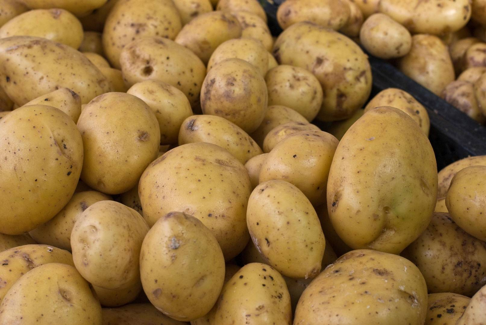
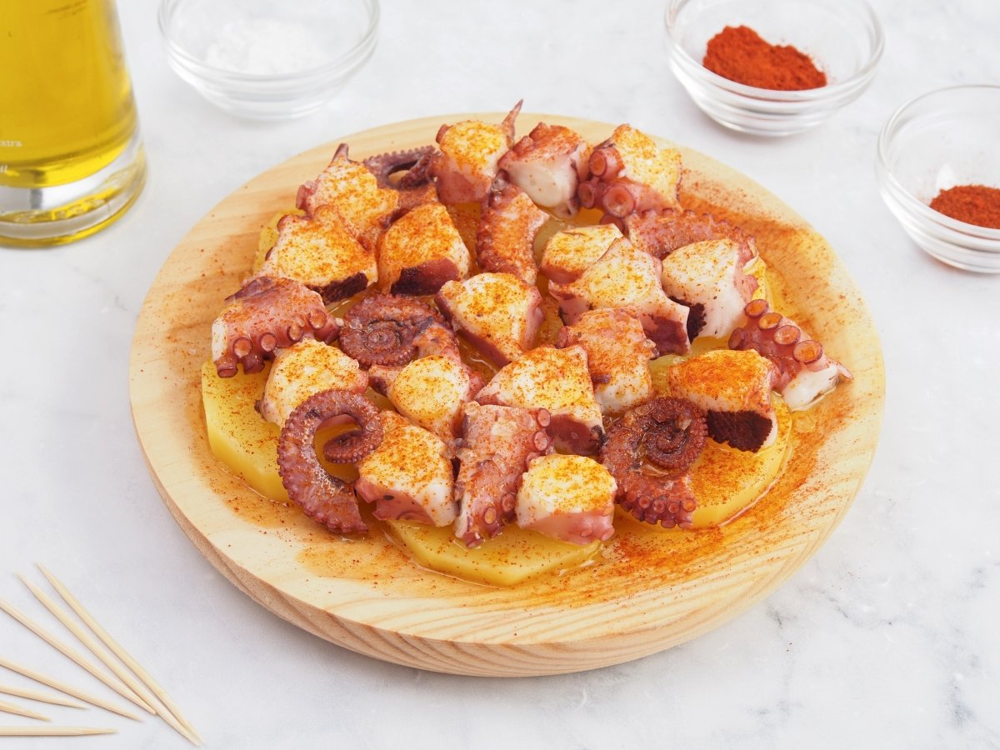
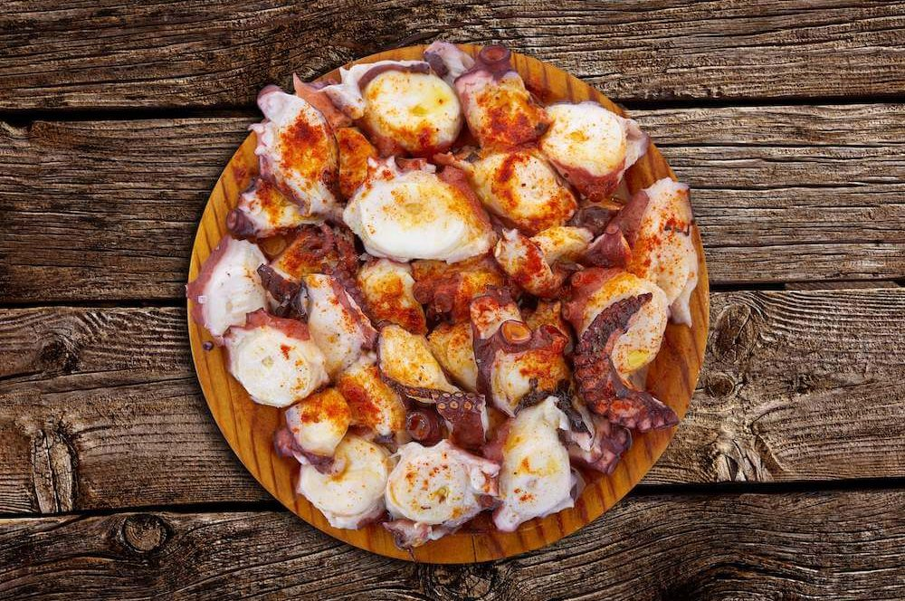

CÓMO COCINAR PULPO A LA GALLEGA
Ingredientes
- Pulpo (1.5Kg)
- Patatas (800g)
- Aceite de oliva (100ml)
- Pimentón dulce (1 cucharadita)
- Sal gruesa (al gusto)


Preparación
- Primero limpiamos bien el pulpo. Si el pulpo es fresco, conviene congelarlo al menos 48 horas antes para que quede tierno.
- Ponemos a hervir una olla grande con abundante agua sin sal. Cuando el agua rompa a hervir, introducimos y sacamos al pulpo del agua tres veces,
dejándolo unos segundos dentro cada vez. Esto ayuda a que la piel no se desprenda al cocerlo.
- Después, dejamos cocer el pulpo a fuego medio durante unos 35-40 minutos.
Podemos comprobar el punto pinchando la parte más gruesa de un tentáculo: debe estar tierno pero firme.
- Mientras tanto, en otra olla cocemos las patatas peladas y cortadas en rodajas gruesas durante unos 20 minutos.
- Una vez listo el pulpo, lo retiramos del agua y lo dejamos reposar unos minutos. Luego lo cortamos en rodajas.

- Colocamos una base de patatas en un plato, y encima disponemos las rodajas de pulpo.
Espolvoreamos primero con sal gruesa, luego con pimentón dulce y picante, y finalmente regamos con un generoso chorro de aceite de oliva virgen extra.
¡Listo! Ya puedes disfrutar de un delicioso pulpo a la gallega al estilo tradicional .